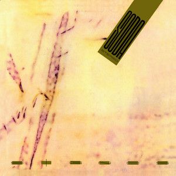
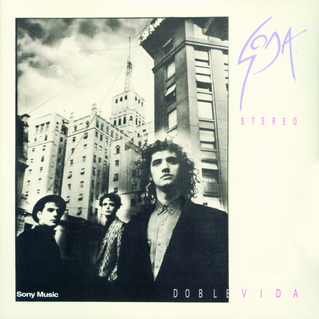
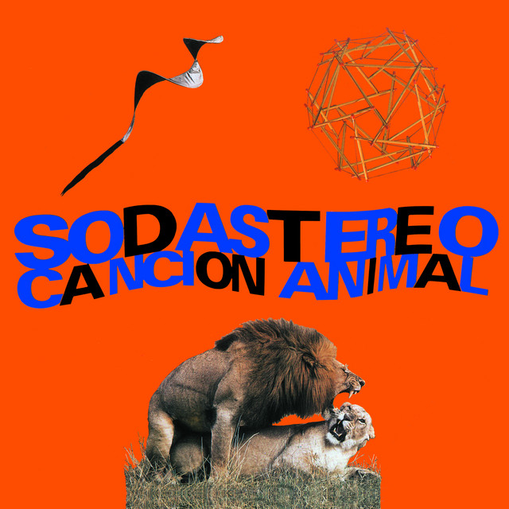
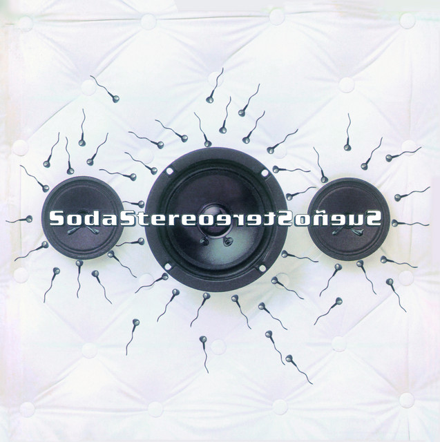

Signos fue uno de los álbumes más importantes de Soda Stereo. Incluye canciones famosas como Persiana Americana, Prófugos y El Rito. El álbum ayudó a consolidar a la banda como un referente del rock latinoamericano.
Listen to Signos
Doble Vida mostró un sonido más maduro de la banda y amplió su popularidad internacional. Una de sus canciones más conocidas es En la Ciudad de la Furia, que se convirtió en uno de los temas emblemáticos de Soda Stereo.s
Listen to Doble Vida
Canción Animal is considered one of the most important albums in the band's career. It contains De Música Ligera, one of Soda Stereo's most famous songs, as well as Té para Tres and Un Millón de Años Luz.
Listen to Canción Animal
Sueño Stereo fue el último álbum de estudio de la banda. Incorporó elementos de rock alternativo y música electrónica, y contuvo canciones como Ella Usó Mi Cabeza Como un Revólver y Zoom.
Listen to Sueño Stereo